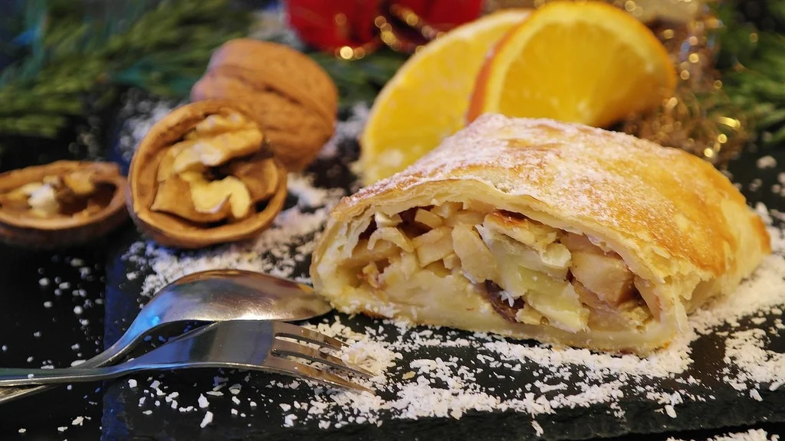
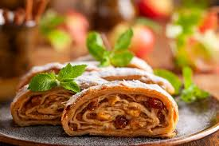
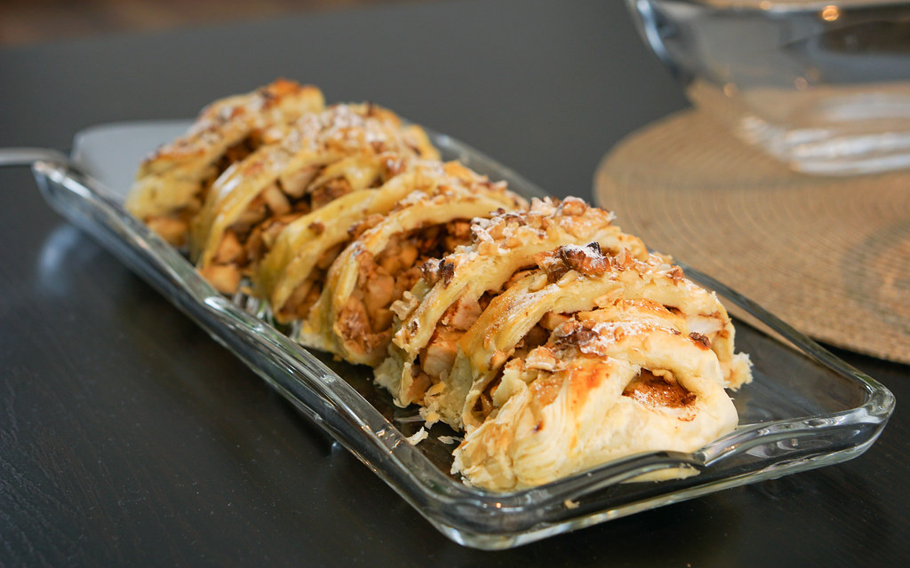

Home
Strudel



Description
This apple strudel is very easy to make with apples, raisins, and frozen puff pastry, yet it looks impressive and tastes amazing! A truly delicious fall dessert.
Ingredients
- Apples
- Brown sugar
- Golden raisins
- Flour
- Puff Pastry
- Salt
- Eggs
- Milk
Steps
- Stir the apples, brown sugar, golden raisins, and flour in a bowl.
- Place each puff pastry on a lightly floured work surface and roll into two rectangles.
- Fill and seal each pastry, then transfer to a baking sheet.
- Brush on the egg wash and cut slits into the top.
- Bake until golden brown.